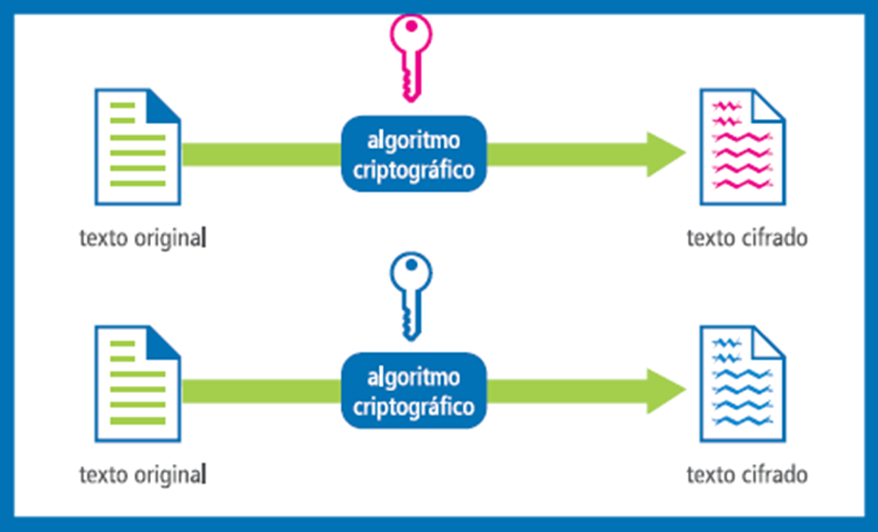
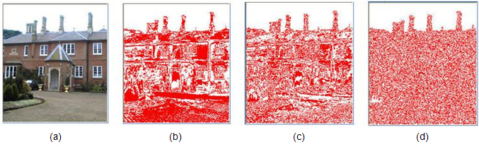

¿Qué es la criptología?
Definición:
"La criptología es la disciplina que se dedica al estudio de la escritura secreta, es decir, estudia los mensajes que, procesados de cierta manera, se convierten
en difíciles o imposibles de leer por entidades no autorizadas."
En resumen, la criptología consiste en cambiar los símbolos de un mensaje por otros para que nadie más pueda saber su contenido.
Antes, la criptología tenía el único objetivo de conseguir la confidencialidad de los mensajes y lo hacían con un único código.
La aparición de la informática, sin embargo, ha producido un número creciente de problemas de seguridad. Las transacciones que se realizan
a través de internet pueden ser interceptadas, y por tanto, la seguridad de esta información debe garantizarse. Esto ha provocado que los objetivos
de encriptar mensajes se dividan en diferentes ramas. Cada una se encarga de un problema distinto estudiando algoritmos, protocolos y sistemas que se
utilizan para proteger la información.

Campos de estudio de la criptología
- Criptografía. Se ocupa del estudio de los algoritmos, protocolos y sistemas que se utilizan para proteger la información y dotar de seguridad a las comunicaciones y a las entidades que se comunican.
- Criptoanálisis. Podríamos decir que el criptoanálisis tiene un objetivo opuesto al de la criptografía. Su objetivo es buscar el punto débil de las técnicas criptográficas para explotarla y así reducir o eliminar la seguridad que aporta la criptografía. Es lo que comúnmente se conoce como ataque.
- Esteganografía. Se ocupa de ocultar mensajes con información privada por un canal inseguro, de forma que el mensaje no sea ni siquiera percibido.
Normalmente el mensaje es escondido dentro de datos con formatos de video, imágenes, audio o mensajes de texto. Esta técnica se usa sobre todo para:
transmitir información entre entidades sin que sea detectada por terceros, inclusión de información imperceptible en objetos digitales para permitir un
mayor control del uso de esos objetos digitales, por ejemplo, para implementar huellas digitales o marcas de agua.

Ejemplo de planos de bits: a) Muestra la imagen original b) Muestra un plano de bits más cercano al más significativo c) Muestra un plano intermedio d) Muestra un plano de bits más cercano al menos significativo - Estegoanálisis. Al igual que ocurre con la criptografía y el criptoanálisis, el estegoanálisis es el opuesto de la esteganografía. El objetivo del estegoanálisis consiste en buscar el punto débil de las técnicas esteganográficas para explotarlas y así reducir o eliminar la seguridad de éstas. También se les conoce como ataque.